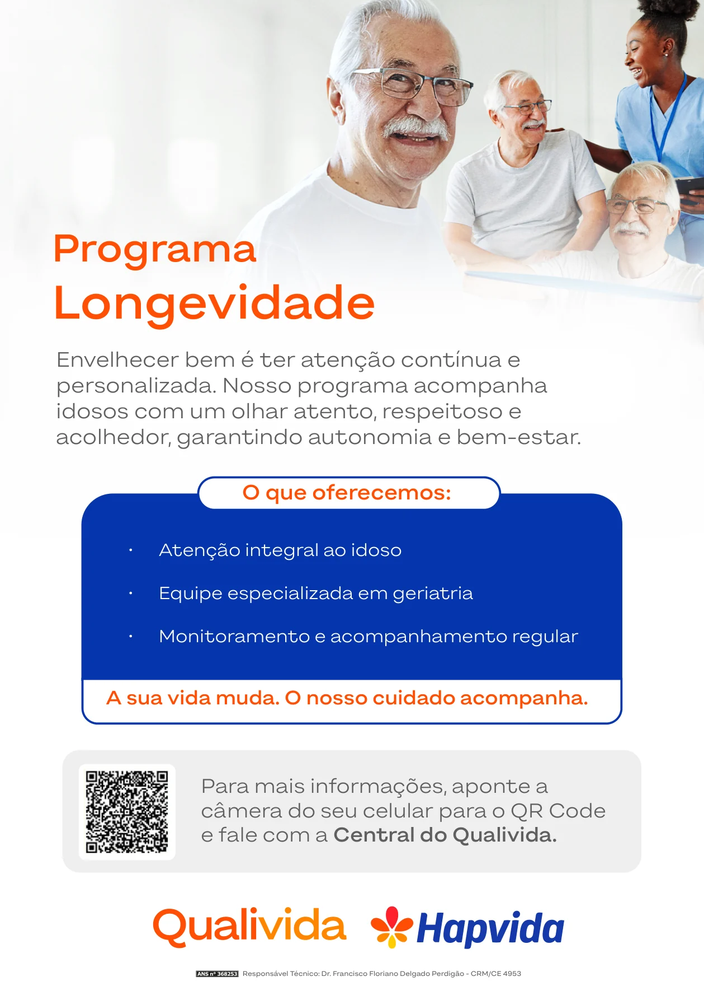
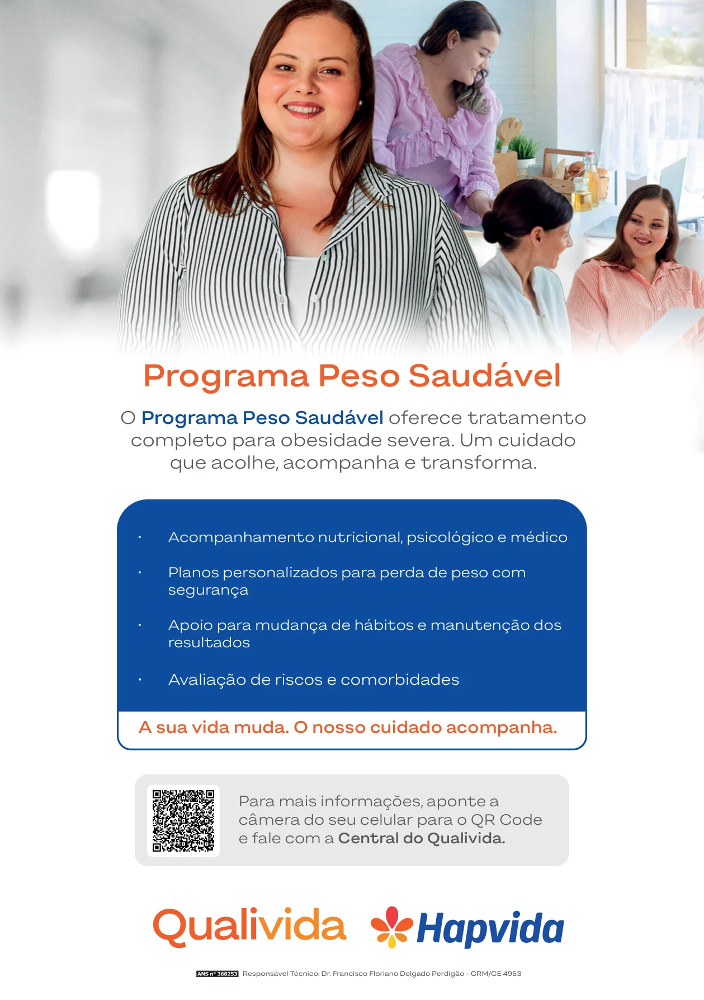
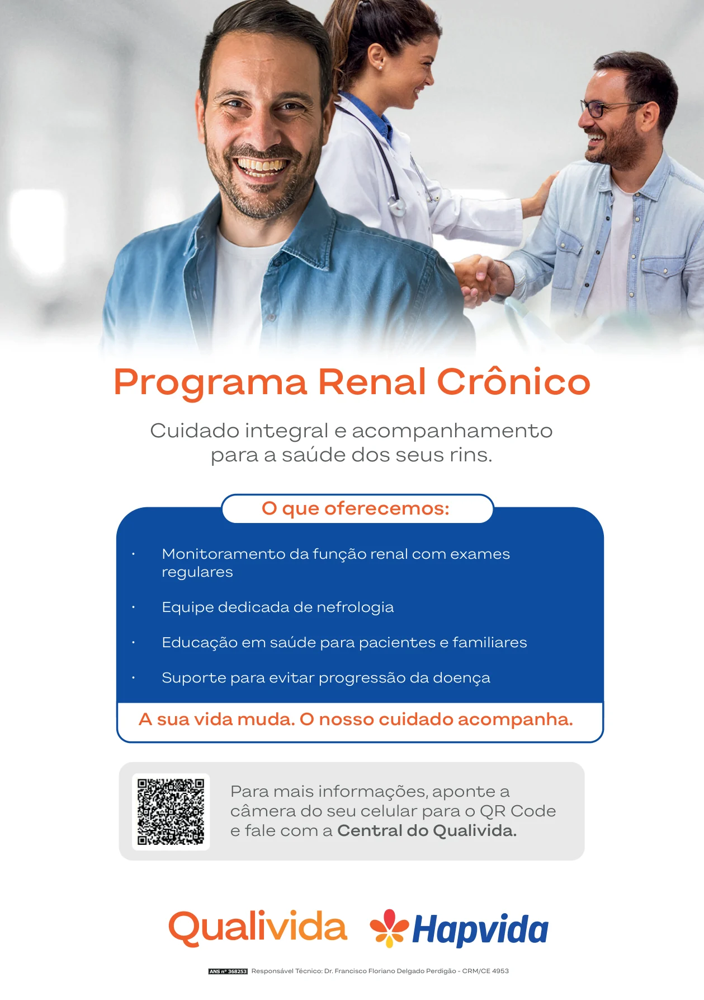
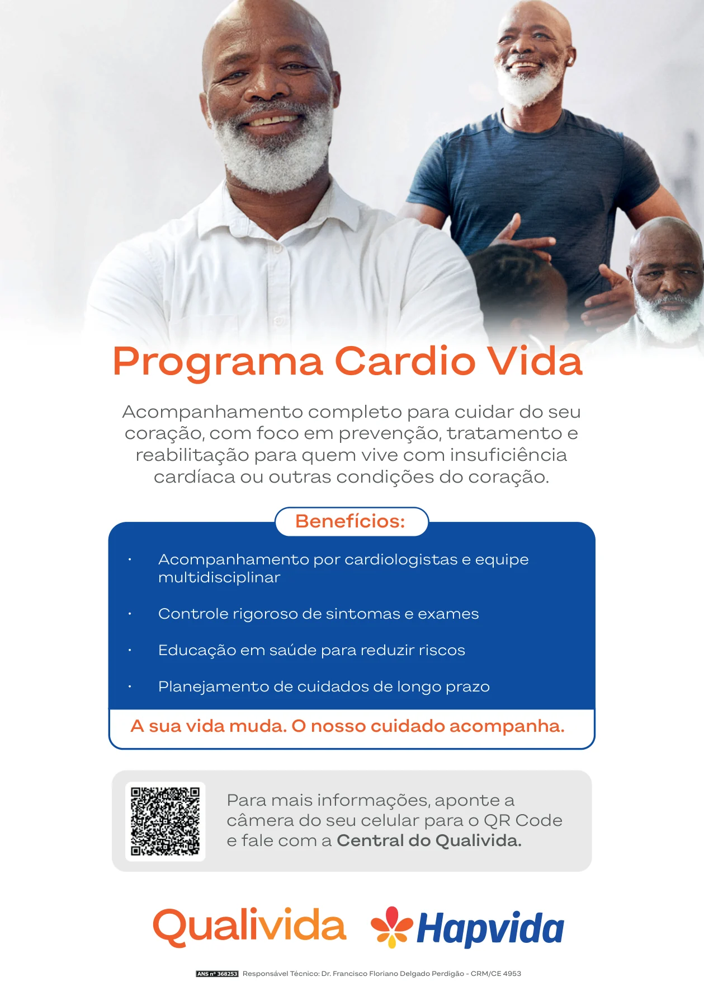
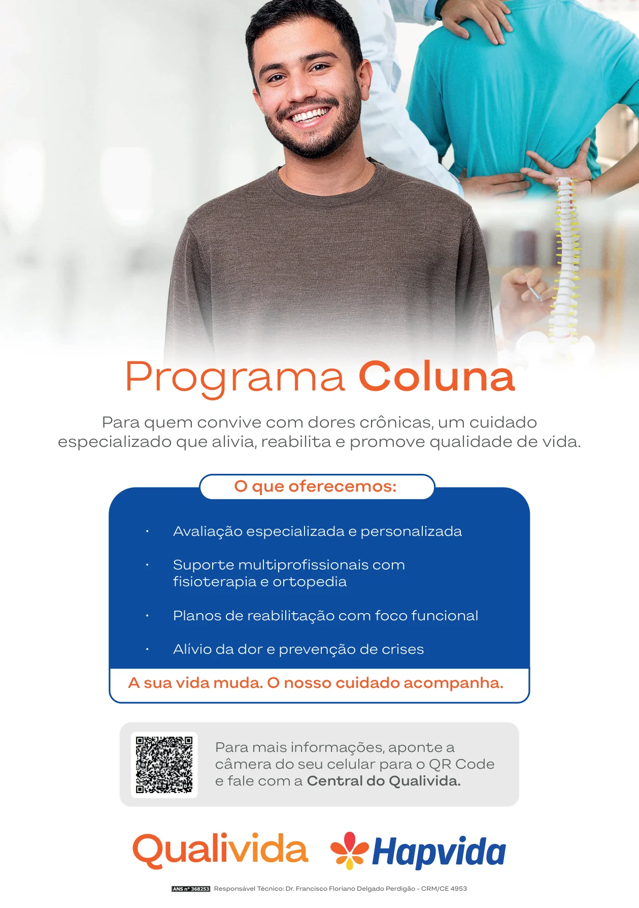
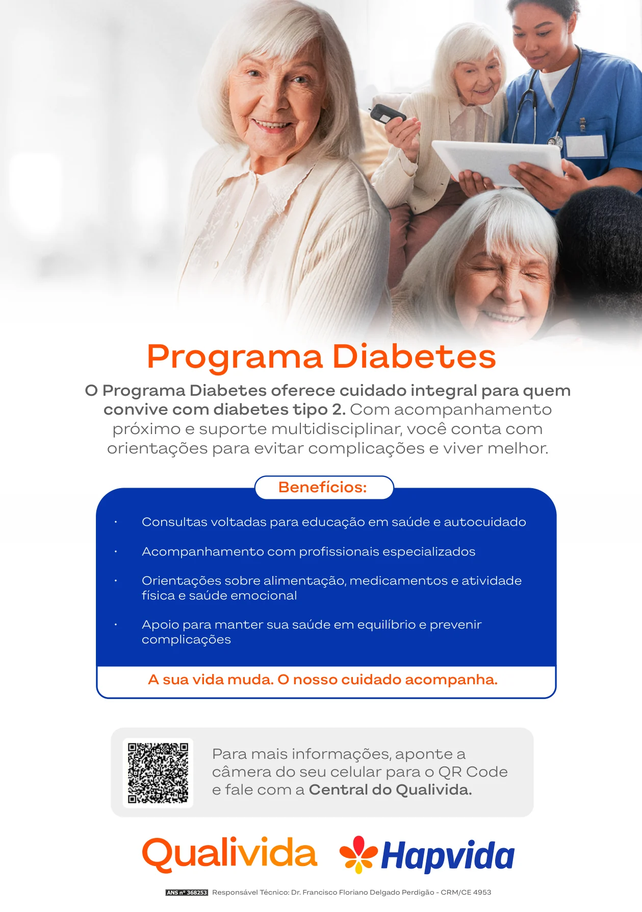

01
Programa Longevidade
Atenção integral e acompanhamento especializado para idosos.

Escaneie o QR Codeou use o botão para conversar com a Central Qualivida.
Conheça os programas de cuidado Qualivida. Escolha o programa de seu interesse e encontre informações e atendimento em um só lugar.
Explorar os 6 programasToque no programa que deseja conhecer ou desça a página para conferir todas as artes originais, com seus QR Codes.
Atenção integral e acompanhamento especializado para idosos.

Escaneie o QR Codeou use o botão para conversar com a Central Qualivida.
Acompanhamento nutricional, psicológico e médico para o cuidado com o peso.


Escaneie o QR Codeou use o botão para conversar com a Central Qualivida.
Atenção especializada e acompanhamento da saúde renal.


Escaneie o QR Codeou use o botão para conversar com a Central Qualivida.
Cuidados de prevenção, tratamento e acompanhamento do coração.

Escaneie o QR Codeou use o botão para conversar com a Central Qualivida.
Orientação e reabilitação para dores crônicas e saúde da coluna.


Escaneie o QR Codeou use o botão para conversar com a Central Qualivida.
Educação em saúde e acompanhamento integral de pessoas com diabetes tipo 2.


Escaneie o QR Codeou use o botão para conversar com a Central Qualivida.
Entre em contato com a Central Qualivida pelo WhatsApp, por meio do botão abaixo ou de qualquer QR Code das artes.
Falar com a Central Qualivida